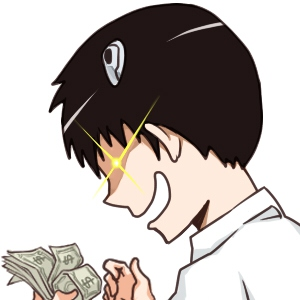

银魂

《银魂》（ぎんたま）是日本漫画家空知英秋的少年漫画作品，于2003年12月8日开始连载。以风格独特的 毒舌、吐槽、无厘头、异想天开的恶搞，为作品的特色与卖点，但也不时穿插感人的故事，以及人生道理的描写。作者空知英秋本来只是打算JUMP编辑部打一份短工，却没有想到漫画意外的受欢迎，之后凭借着其独特的画风和剧情，一举成为了JUMP漫画中少见的热血历史吐槽人气作品。2014年7月10日，《银魂》全彩版漫画登陆中国移动和动漫，这是集英社历史上第一次在中国授权全彩漫画电子版权。
坂田银时：主人公，万事屋的老板，喜欢《JUMP》，通称“万事屋阿银”。坚信并贯彻自己的“武士道”的男人，同时也是“糖分控”离开糖就活不下去。
志村新八：长相平凡，是个摘掉眼镜存在感就为零的人物，眼镜其实是本体，喜欢吐槽，曾被神乐吐槽为“带着人类的眼镜”。
神乐：女主角，夜兔族，性格善良单纯，大胃王，有抖S倾向，说话时带有中国口音。
定春：万事屋的吉祥物。真实身份是巨大生物“狛神”。